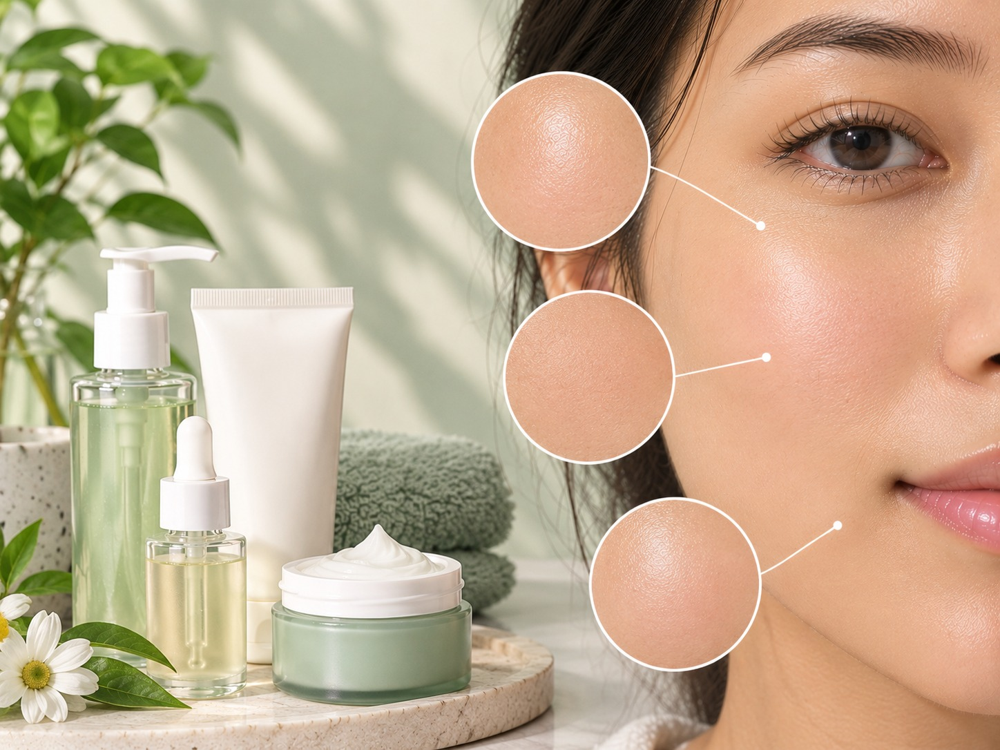

What is Normal Skin?
Normal skin generally feels comfortable and balanced,
without excessive oiliness or dryness.

Common Characteristics
- Generally balanced oil production
- Skin feels comfortable
- Usually no excessive dryness or oiliness
- Small or less visible pores
- Good Hydration
- Balanced appearance
Basic Skincare Routine
- Cleanse gently with a mild cleanser.
- Apply a suitable moisturizer.
- Use broad-spectrum SPF 30 or higher sunscreen daily.
- (optional) Hydrating serum, if needed.
Ingredients to Know
-
Hyaluronic Acid:
Helps the skin retain moisture and stay hydrated.
-
Niacinamide:
May support the skin barrier and improve the appearance of uneven skin tone.
-
Ceramides:
Help support the skin's natural protective barrier.
-
Aloe Vera:
Provides a soothing, refreshning feel.
Precautions
- Avoid harsh cleansers.
- Do not overwash your face.
- Choose products suitable for your skin.
- Keep your skin moisturized.
- Apply sunscreen daily.
- Introduce new products carefully.
Note:
Everyone's skin is different. These characteristics are
general guidelines, not a medical diagnosis.